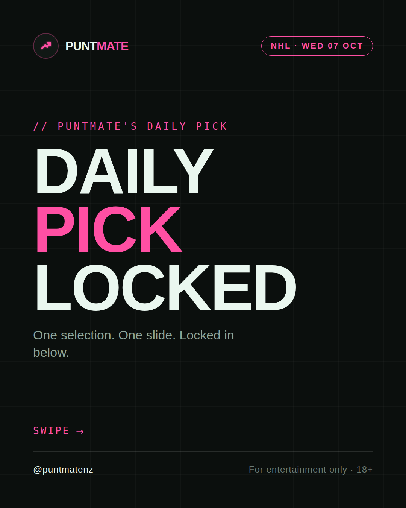
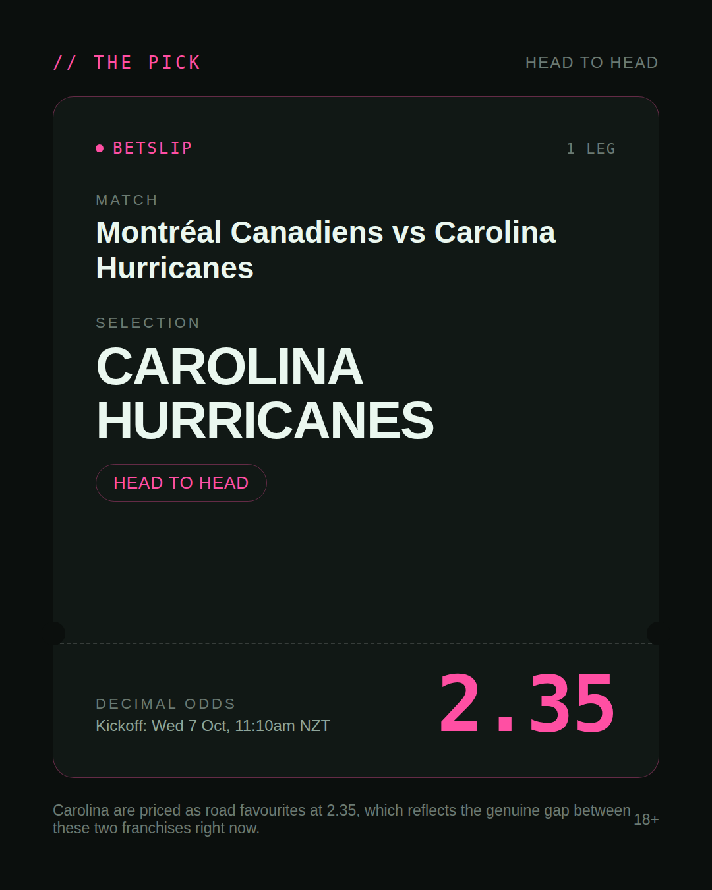
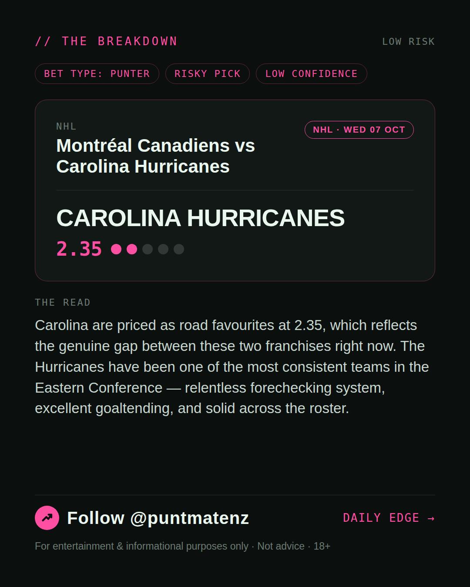
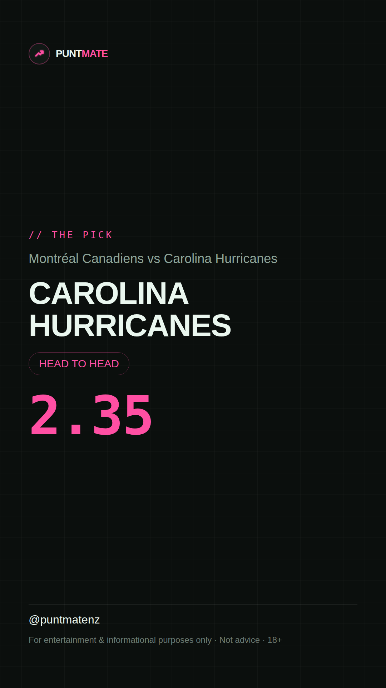

*🎯 PUNTMATE NZ — NHL* 🏟 Montréal Canadiens vs Carolina Hurricanes *PICK:* CAROLINA HURRICANES *ODDS:* 2.35 (Head to Head) *BET TYPE: PUNTER* _Carolina are priced as road favourites at 2.35, which reflects the genuine gap between these two franchises right now. The Hurricanes have been one of the most consistent teams in the Eastern Conference — relentless forechecking system, excellent goaltending, and solid across the roster._ ────────────────── 📲 Join Telegram for daily picks ⚠️ For entertainment & informational purposes only. Not advice. 18+.
🎯 NHL — Montréal Canadiens vs Carolina Hurricanes CAROLINA HURRICANES @ 2.35 (Head to Head) BET TYPE: PUNTER Solid touch here. Not a lock, but the value's real and the form backs it up. Carolina are priced as road favourites at 2.35, which reflects the genuine gap between these two franchises right now. The Hurricanes have been one of the most consistent teams in the Eastern Conference — relentless forechecking system, excellent goaltending, and solid across the roster. Follow for daily value picks → @puntmatenz ⚠️ For entertainment & informational purposes only. Not advice. 18+. #PuntmateNZ #SportsBetting #NZTAB #NHL
| has_pick | True |
| pick_id | 2026-10-06_Montr_al_Canadiens_vs_Carolina_Hurricanes |
| run_id | 37398121980 |
| generated_at | 2026-10-06T01:15:57.363201+00:00 |
| post_date | 2026-10-06 |
| match | Montréal Canadiens vs Carolina Hurricanes |
| sport | icehockey_nhl |
| sport_label | NHL |
| market | Head to Head |
| selection | CAROLINA HURRICANES |
| odds | 2.35 |
| bet_type | PUNTER_BET |
| bet_type_label | BET TYPE: PUNTER |
| bet_type_reason | Solid touch here. Not a lock, but the value's real and the form backs it up. Carolina are priced as road favourites at 2.35, which reflects the genuine gap between these two franchises right now. The Hurricanes have been one of the most consistent teams in the Eastern Conference — relentless forechecking system, excellent goaltending, and solid across the roster. |
| classification | RISKY_PICK |
| risk | RISKY_PICK |
| confidence | LOW |
| confidence_label | LOW |
| final_explanation | Carolina are priced as road favourites at 2.35, which reflects the genuine gap between these two franchises right now. The Hurricanes have been one of the most consistent teams in the Eastern Conference — relentless forechecking system, excellent goaltending, and solid across the roster. |
| public_caution | Keep this one light — the value's there but so is the uncertainty. |
| theme | night |
| carousel_paths | ['data/review/2026-10-06_Montr_al_Canadiens_vs_Carolina_Hurricanes/cover.png', 'data/review/2026-10-06_Montr_al_Canadiens_vs_Carolina_Hurricanes/tip.png', 'data/review/2026-10-06_Montr_al_Canadiens_vs_Carolina_Hurricanes/breakdown.png'] |
| carousel_urls | ['https://raw.githubusercontent.com/kingofthecastle24/puntmate/main/data/cards/2026-10-06_Montr_al_Canadiens_vs_Carolina_Hurricanes_night_1_cover.png', 'https://raw.githubusercontent.com/kingofthecastle24/puntmate/main/data/cards/2026-10-06_Montr_al_Canadiens_vs_Carolina_Hurricanes_night_2_tip.png', 'https://raw.githubusercontent.com/kingofthecastle24/puntmate/main/data/cards/2026-10-06_Montr_al_Canadiens_vs_Carolina_Hurricanes_night_3_breakdown.png'] |
| story_path | data/review/2026-10-06_Montr_al_Canadiens_vs_Carolina_Hurricanes/story.png |
| story_url | https://raw.githubusercontent.com/kingofthecastle24/puntmate/main/data/cards/2026-10-06_Montr_al_Canadiens_vs_Carolina_Hurricanes_night_story.png |
| intended_platforms | ['telegram', 'instagram_feed', 'instagram_story', 'facebook'] |
| workflow_state | GENERATED |
| has_punter_multi | False |
| has_gambler_multi | False |
| has_degenerate_multi | False |